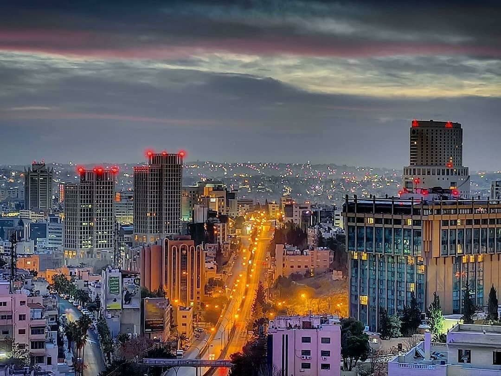

Discover Jordan's Wonders With Us!
Escape the Ordinary: Experience Jordan's Majestic Beauty!

What we offer
Everything you need for a smooth trip, from the airport to the sights.
Airport Transfers
Licensed tourist transfers between Amman and Queen Alia International Airport.
Airport Meet & Greet
Vans up to 7 seats and private cars up to 3 seats.
Customized Tours
Tours tailored to your interests across Jordan.
Daily Trips
Popular destinations like Petra, Wadi Rum, the Dead Sea and Jerash.
Private Transportation
Comfortable private transport for families and groups.
Local Tour Guides
Professional guides knowledgeable in Jordanian culture and history.
Leisure Trips
Relaxing trips to natural sites and reserves.
Cultural Exploration
Tours including visits to archaeological and religious sites.
Advance Booking
Book ahead for smooth and stress-free trip organization.